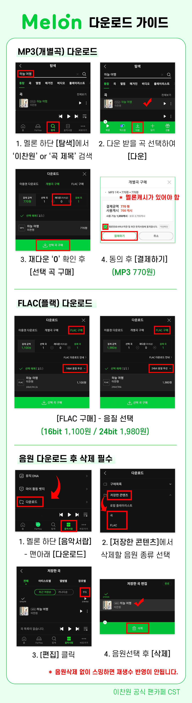
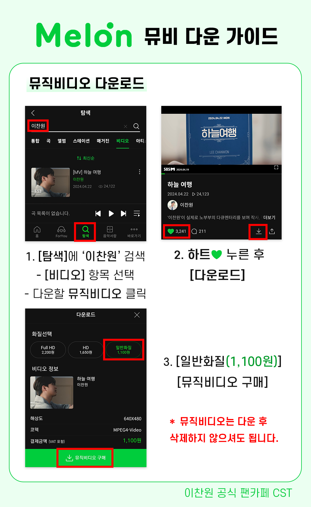

🍈 MELON DOWNLOAD
멜론 음원 다운로드 & 파일 삭제 가이드
다운로드 점수는 음원 차트에 큰 비중을 차지합니다! 다운로드 후 기기 내 음원 파일 삭제법까지 확인하세요.
💳 멜론 캐시 사전 충전하기
개별 곡 다운로드를 위해 먼저 멜론 캐시를 충전해주세요.
1️⃣ 음원 다운로드 및 기기 내 파일 삭제
* 다운로드한 MP3 파일이 기기에 남아있으면 스밍 시 다운 파일이 재생되어 스트리밍 수치에서 누락될 수 있으므로, 반드시 다운 완료 후 기기 내 다운로드 파일을 삭제해주세요.

2️⃣ 뮤직비디오 (MV) 다운로드
* 뮤직비디오는 다운로드 후 별도로 삭제하지 않으셔도 무방합니다.
